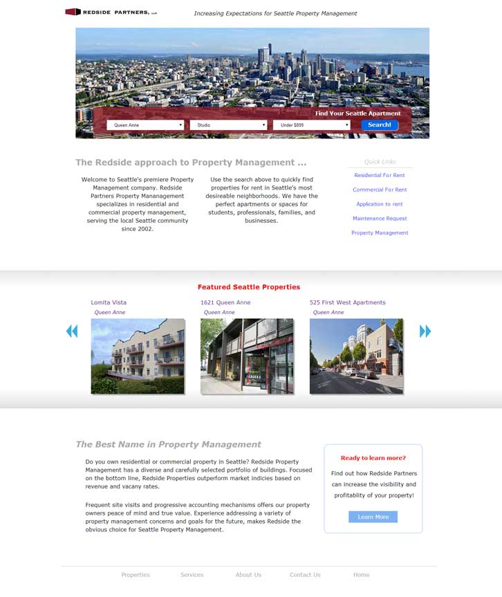
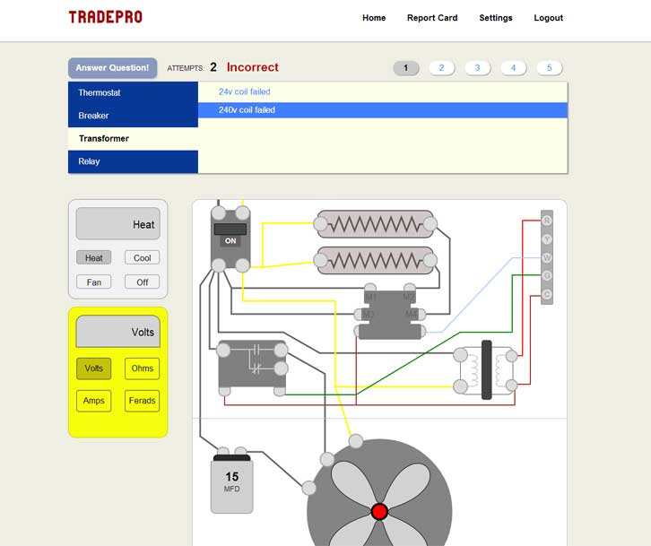
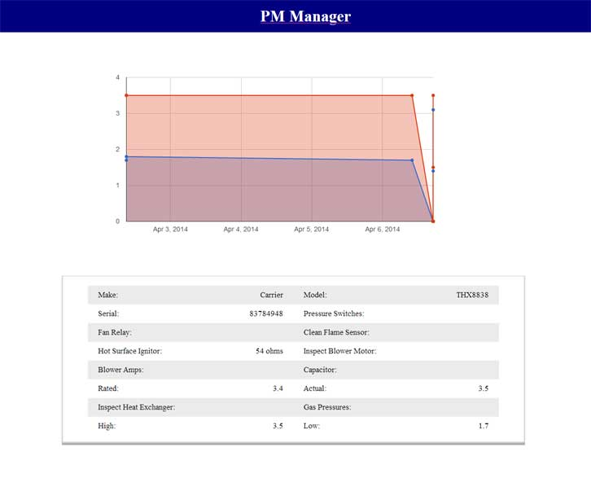
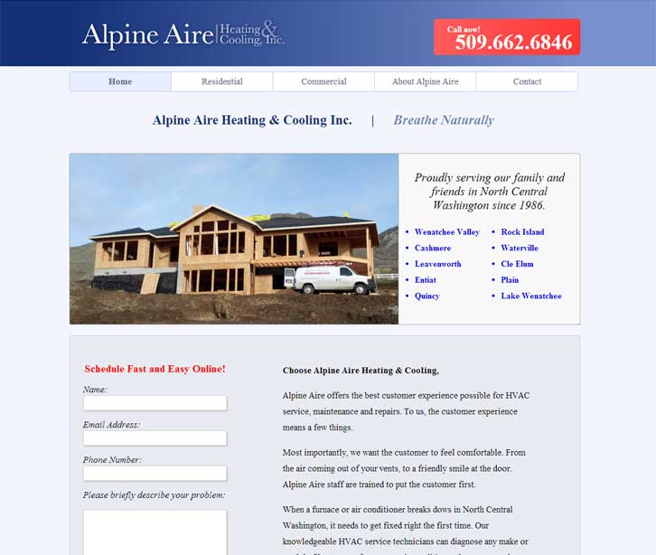

<div class='page-wrapper'>
	<div class='sidebar-container'>
		<div sidebar></div>
		<div class='content'>
			<div class='headbar-wrapper {{headbar}}'>
			</div>

			<div class='content-holder'>
				<h3>Redside Property Management</h3>
				<a class='project-link' href='' target='_blank'>redside.herokuapp.com</a>
				<div class='half-p'>
					<p>A property management website designed to attract new tenants, and property clients. This website is designed with an incredible <em>google maps</em> feature, that offers a much richer experience than typical map overlays.</p>
					<p>Flexible and fast, this application is built using an <em>AngularJS</em> framework. Listings are managed using <em>monogodb</em> and a <em>nodejs</em> server.</p>
				</div>
				<div class='half-p'>
					<p>SEO is a priority for Redside partners. To work around the limitations of AJAX SEO, I implemented <em>gruntHTMLsnapshot</em>, a tool that generates 'snapshots' of pre-rendered html to serve to search engines.</p>
					<p>Redside partners is designed to be beautifully <em>responsive</em>.</p>
					<p>This website is still under heavy construction. Only the 'maps' features and the 'Learn More' button are operational</p>
				</div>
				
			</div>

			<div class='content-holder'>
				<h3>TradePro</h3>
				<a class='project-link' href='' target='_blank'>tradepro.herokuapp.com</a>
				<div class='half-p'>
					<p>This a web application designed to train HVAC technicians how to electrically diagnose a furnace. The core of this project is built around a complex object that draws the circuitry based on arguments provided to its methods.</p>
					<p><em>BackboneJS</em> is used for the client side mvc. A <em>node server</em> manages user sessions with <em>passportjs</em>. </p>
				</div>
				<div class='half-p'>
					<p>An extremely important feature of this website, is the ability to track user metrics and learning progress. Collecting data from simulated electrical problems and test questions, I am able to generate detailed user reprots.</p>
					<p>User data is stored in a <em>mongodb</em>.</p>
				</div>
				
			</div>
			<div class='content-holder'>
				<h3>PM Manager</h3>
				<div class='half-p'>
					<p>Don't let the looks fool you. Although this project was never developed far enough to earn design treatment, the proof of concept here is very strong.</p>
					<p>In the HVAC industry, technicians collect tons of data about furnaces/ac (amp draws, mfd ratings, gas pressures, R-22/R-410 psi, etc). This precious data is being stored in flat pdf files, and even worse, paper tickets.</p>

				</div>
				<div class='half-p'>
					<p>This web application is a proof of concept which creates a fast and flexible structure for storing, retrieving, and intrepreting this data. Customers who perform regular maintenances, are served custom reports of their furnace health and efficiency.</p>
					<p><em>BackboneJS</em> is the mvc used here (although if I were to re-do it I'd likely use Angular). <em>Node server</em> with a <em>mongodb</em></p>
				</div>
				
			</div>
			<div class='content-holder'>
				<h3>Alpine Aire</h3>
				<a class='project-link' href='' target='_blank'>alpineaire.net</a>
				<div class='half-p'>
					<p>Alpine Aire is a <em>PHP</em> powered website designed to perform well in <em>SEO</em>, and encourage customers to call for a service appointment.</p>
					<p>Alpine Aire is a heating and cooling contractor in Wenatchee. This project invovled researching and indetifying keywords using <em>Google Keyword Planner</em>, and following through with and SEO strategy.</p>

				</div>
				<div class='half-p'>
					<p>By following this plan, alpineaire.net soon rose to the top of searches for 'HVAC Wenatchee'. A mobile website is also provided.</p>
				</div>
				
			</div>
		</div>
	</div>
</div>